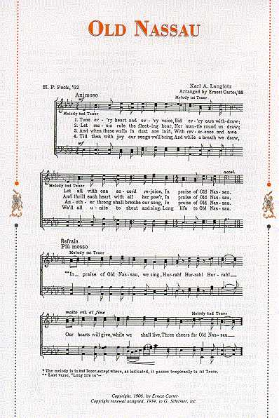

|
Old Nassau's Lyrical Change In 1987 the lyrics of Princeton's Alma Mater were subtly but importantly changed to acknowledge co-education, which had been introduced in 1969. In the refrain, the phrase "my boys" was changed to "we sing," and "Her sons" to "Our hearts." Below are the two complete refrains. Pre-1987 Refrain In praise of Old Nassau, my boys, Post-1987 Refrain In praise of Old Nassau, we sing, |

|
Return
to the Old Favorites Exhibit
Go to the Old Nassau Collection
Go to the Princeton Music Collection
Return to the Mudd Library home page